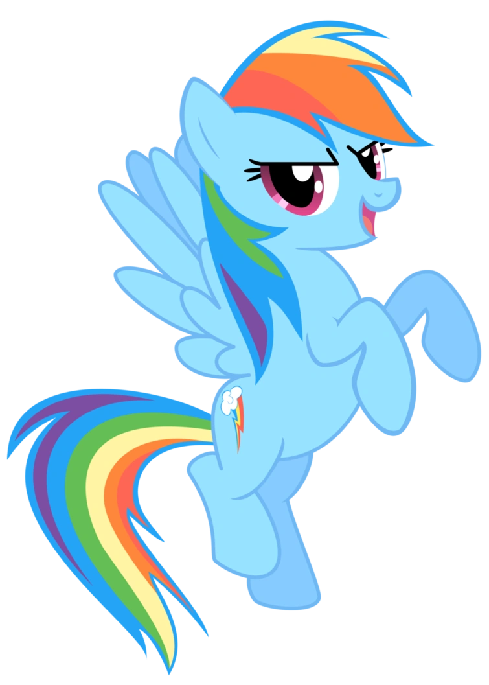

Pegasus ponies, or Pegasi, are one of several kinds of ponies that live in Equestria, along with Unicorns and Earth ponies. They are characterized by their wings as well as their ability to fly, walk on clouds, and control the weather.
This section will go over their History, Abilities and more.